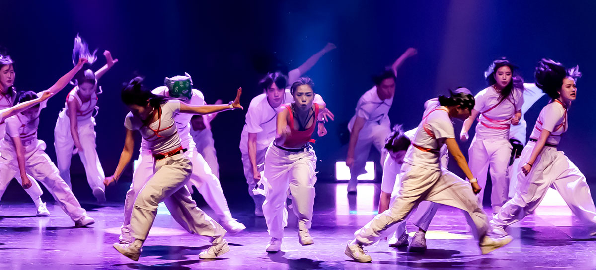
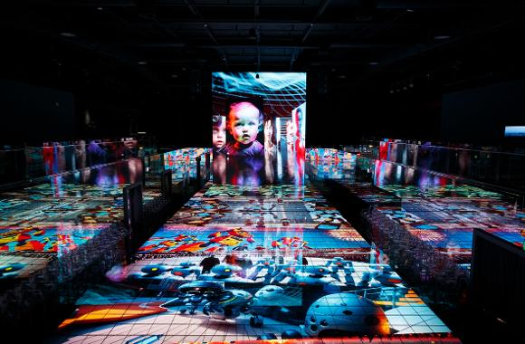
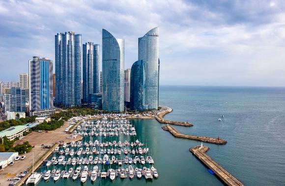
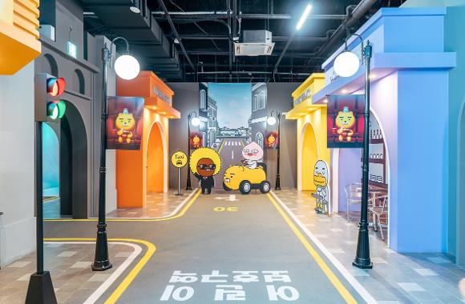
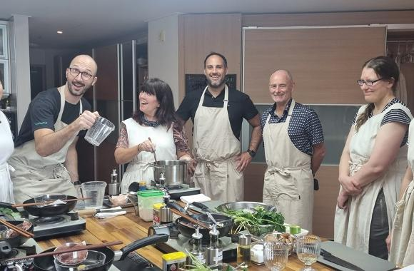
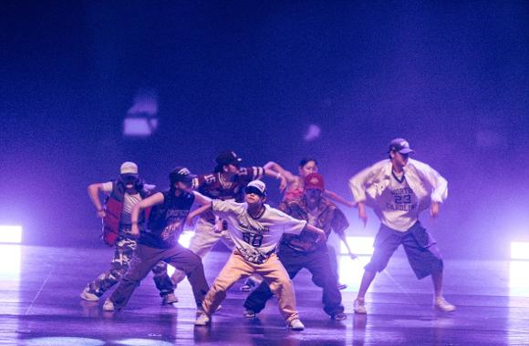
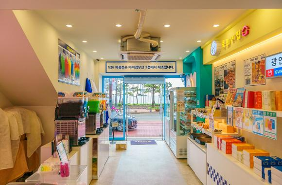
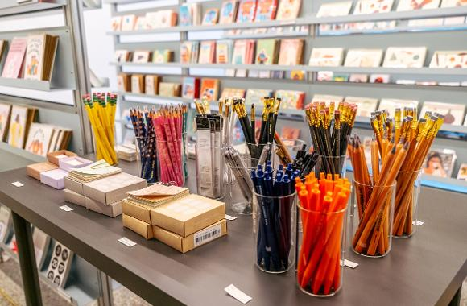
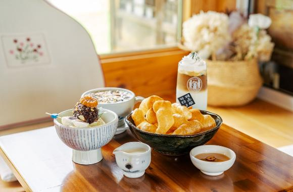

Z세대 원픽! K컬처 체험 2박3일 코스
풍성한 한가위를 맞아 온 가족이 함께 즐길 수 있는 부산 여행 코스를 소개합니다.
K컬처 체험 코스 추천 1일차 : 뮤지엄원 → 요트투어
2일차 : 라이언홀리데이 인 부산 → 코리아쿠킹클래스 밥상 인 부산 → 호댄스 스튜디오
3일차 : 아이엠부산 → 포셋 → 다온나루

1일차 투어

"뮤지엄원" 여행 1일 차, 2019년 8월 개관한 예술 전문 기획사 ‘쿤스트 원’이 설립한 미디어 아트 전문 현대 미술관 뮤지엄원이 자리한 해운대 도착. 약 700여 평 규모의 복층으로 이뤄진 이곳은 8천만 개의 LED를 바닥과 천장, 벽면에 설치, 관람객을 예술 작품으로 이끄는 초현실적인 경험이 가능한 곳. 한마디로 활용, 사용, 체험 가능한 예술을 만끽할 수 있는데요. 쉼 없이 변하는 미디어아트의 특성 덕에 같은 시공간에서 색다른 공간과 만나는 이색적인 경험 어떠신가요?

"요트투어" 흔들리는 물결 위 바다와 도심 전경을 동시에 감상하고 싶다면 수영만요트경기장에서 요트투어가 제격. 업체마다 여행 시간과 출발지점은 다르나 대체로 1시간 남짓. 해운대와 광안리 일대를 운행하는 코스로 운영, 선상에서 즐길 간단한 먹을거리를 제공해요. 프로그램은 시간대별로 낮, 선셋, 야경 투어 등 구분되나 어둠이 내려앉은 부산 앞바다와 눈부신 조명을 밝힌 마천루 조망 코스인 야경 투어를 권합니다.
2일차 투어

"라이언홀리데이 인 부산"현대인의 최애 이모티콘 캐릭터로 꼽히는 카카오프렌즈. 다양한 콘텐츠와 귀여운 캐릭터 디저트를 함께 즐김 가능한 미디어 체험숍 라이언홀레데이 인 부산. 그랜드조선 호텔 뒤편으로 가면 카카오프렌즈 캐릭터가 자리한 입구를 만나고 계단을 따라 내려가면 지하 1층과 2층으로 구성된 무료 체험관 등장! 유료공간인 ‘Ryan My favorite things’도 있으니 한층 더 다양한 체험과 테마존, 포토존도 경험해 보시길 바랍니다.

"코리아쿠킹클래스 밥상 인 부산"K컬처 핵심 콘텐츠 중 하나인 ‘한식’. 한 번 맛보면 깊은 풍미에 매료, 중독되는 한식 메뉴를 직접 정하고 만들어 맛보는 체험 기회라니 구미가 확 당기는데요. 외국인 수업은 영어로 진행되고 소요 시간은 대략 3시간가량. 김치 만들기와 인기 있는 한식 메뉴, 한식 디저트 만들기, 사찰음식, 다도 등 다채로운 프로그램을 운영 중인 코리아쿠킹클래스 밥상 인 부산에서 미식의 도시, 부산 맛 제대로 보실까요?

"호댄스"전 세계 Z세대 심장을 요동치게 만든 K팝, 그 덕에 한국의 댄스 아카데미도 호황을 맞았는데요. K팝 댄스를 배우고픈 외국인 관광객을 위한 원데이클래스뿐 아니라 댄스에 관심 많은 일반인, 연예인 지망생과 댄서 등 그야말로 ‘댄스홀릭’한 이들에게 입소문 자자한 호댄스 스튜디오. 체계적인 시스템을 갖춘 일본의 댄스 학원을 롤 모델 삼은 이곳은 웅장하고 세련된 건물 외관에 총 7개 홀 중 연습홀이 4곳, 1층에는 매점까지 자리했어요. 다 함께 쉘 위 댄스?
3일차 투어

"아이엠부산"춘천하면 감자빵, 전주는 초코파이, 각 지역 대표 제품인데요. 광안리해수욕장에 자리한 ‘아이엠부산’은 부산의 대표 제품을 한 데 모은 스토어. 부산의 여러 브랜드 협력 하에 시즌별 5~7개 코너로 운영, 매 시즌별 바뀌는 구성 덕에 공간은 매번 새로움을 더하는데요. 부산카롱, 광안샌드가 대표메뉴로 판매 중인데요. 지인 선물 고르기에도 적격인 이곳, 부산 시그니처 제품을 겟하려면 아이엠부산으로!

"포셋"포셋이 움튼 골목은 NC백화점 뒤쪽으로 각종 공구, 부품, 기계, 전기 상가가 밀집한 건물. 오랜 역사를 고스란히 함축한 건물 안팎의 흔적이 오히려 정감을 더하는데요. 가지런히 진열된 여러 작가의 엽서 작품을 보노라니 마치 잘 준비된 전시회에 들어선 기분. 매장 한쪽 공간은 엽서에 바로 끄적일 수 있게 테이블과 필기구를 배치한 센스가 돋보였어요. 눈길 머무는 엽서 한 장에 진심 깃든 이 순간 느낌을 촘촘히 기록하는 것, 인생 추억 더하기일 테죠.

"다온나루"서울 북촌 한옥마을, 전주 한옥마을이 있다면 부산에는 다온나루가 있다! 한옥카페는 한국적 미에 매료된 외국인들에게 핫한 스폿인데요. 강서구에 위치한 다온나루는 건축디자인상을 받은 이력답게 서까래와 대들보 등이 골조인 한옥 인테리어의 정수를 보여줍니다. 부산 대표 격 한옥카페답게 작은 소품들과 각종 전통차, 한국적 요소를 더한 바싹 찰떡구이 등 특별한 디저트까지 세심히 신경 쓴 흔적이 역력했는데요. 깊어진 밤, 불멍으로 얻은 감흥과 여운은 특별한 선물!